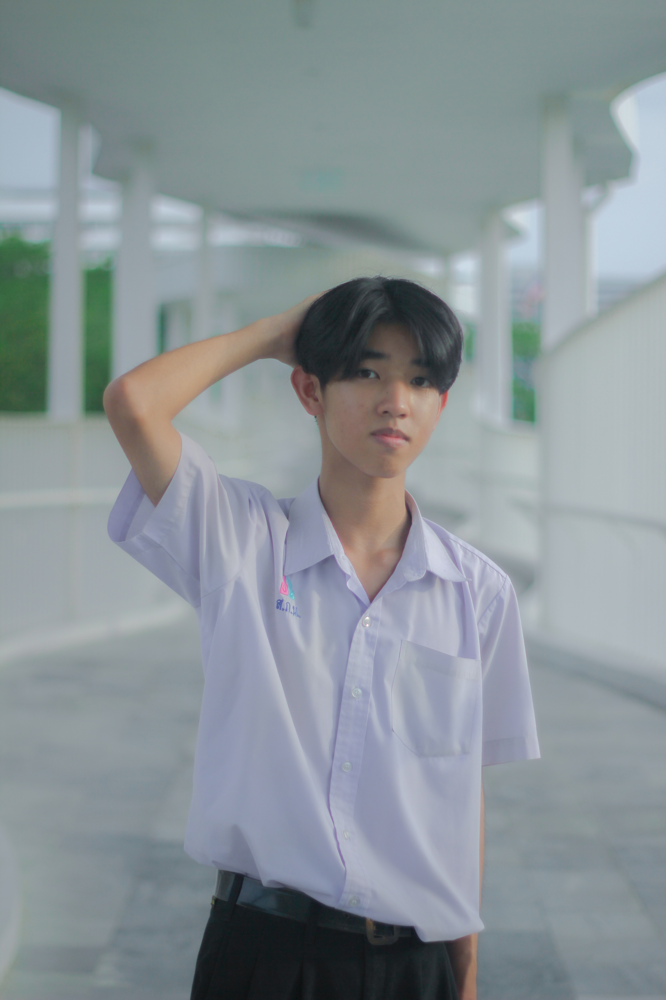

About Me
ชื่อ-นามสกุล : นายอธิป อภิชนังกูร
สถานศึกษา : โรงเรียนสวนกุหลาบวิทยาลัย นนทบุรี
คำคม : โชคร้ายยังคงมี แต่โชคดียังมีกว่า
แนะนำตัว : สวัสดีครับ ผมชื่อ เอ็ม อายุ 17 ปีเข้าโรงเรียนส.ก.น. มาตอนม.ปลายครับ
สิ่งที่สนใจ : งานวิดีโอ ภาพยนตร์ ดนตรี